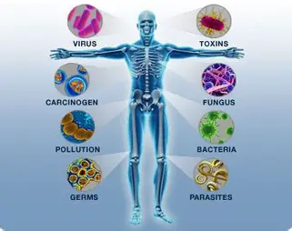

ระบบภูมิคุ้มกันของร่างกาย
ระบบภูมิคุ้มกันของร่างกาย (Immune System) ทำหน้าที่ป้องกันและกำจัดเชื้อโรค สิ่งแปลกปลอม และเซลล์ที่ผิดปกติภายในร่างกาย เช่น แบคทีเรีย ไวรัส เชื้อรา และปรสิต โดยประกอบด้วยอวัยวะ เซลล์ และสารต่าง ๆ ที่ทำงานร่วมกัน เช่น ไขกระดูก ต่อมไทมัส ต่อมน้ำเหลือง ม้าม และเซลล์เม็ดเลือดขาว ภูมิคุ้มกันแบ่งเป็นสองประเภทหลัก คือ ภูมิคุ้มกันแต่กำเนิดที่ตอบสนองต่อเชื้อโรคได้อย่างรวดเร็วโดยไม่ต้องเคยพบเชื้อชนิดนั้นมาก่อน เช่น ผิวหนังและน้ำตาที่มีเอนไซม์ทำลายแบคทีเรีย และภูมิคุ้มกันจำเพาะที่ตอบสนองต่อสิ่งแปลกปลอมอย่างจำเพาะเจาะจงผ่านเซลล์ลิมโฟไซต์อย่าง B cell และ T cell ซึ่งสามารถสร้างเซลล์ความจำไว้ตอบสนองได้รวดเร็วขึ้นเมื่อพบเชื้อเดิมอีกครั้ง ความรู้เกี่ยวกับระบบภูมิคุ้มกันสามารถนำไปประยุกต์ใช้ในการป้องกันโรค พัฒนาวัคซีน และรักษาโรคติดเชื้อ นอกจากนี้การพักผ่อนให้เพียงพอ รับประทานอาหารที่มีประโยชน์ และรักษาสุขอนามัยยังเป็นแนวทางสำคัญที่ช่วยเสริมสร้างภูมิคุ้มกันและส่งเสริมสุขภาพโดยรวมของร่างกาย